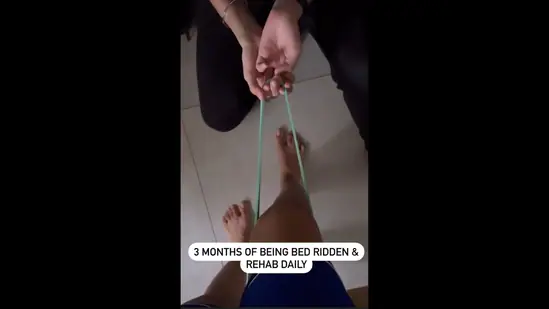

‘Preferably’: Centre revokes Covid-19 face mask mandate for air travel
Avian art spreads its wings on Gurugram’s rustic foot-over bridge
Dhanashree Verma shares rehab journey with 'thank you' note for friends, physio

Shraddha murder: Aaftab sent to 5-day police custody, court allows narco test
Mimicry artist recreates Alia Bhatt's 'pathological liar' sequence from Filmfare. Watch
Economic isolation feels like…: Aaditya Thackeray on loss of 5th project; BJP leader says, 'You were late'
Yale, Harvard withdraw names from US news & world report rankings. Here's why
Opposition is getting clean’: Rahul Gandhi on Congress leaders joining BJP
Sunita Ahuja's cheeky comment about making another baby with Govinda leaves all in splits on Indian Idol 13. Watch
Watch: Sanju Samson's no-look sixes sends India cricketers, coaches in frenzy before New Zealand T20Is
High cholesterol: Common kitchen spices that can help control cholesterol
‘Hang the killer': Chaos at Delhi court as lawyers shout against Shraddha's alleged murderer